Atlas plates · demo
Flowline hachures after Samsonov (2014) from Copernicus GLO-30, vector plates from OSM and Natural Earth. Drag, pinch or ⌘/Ctrl + scroll; click a map to activate plain scrolling and one-finger panning.
Article map: Calheta (subject municipality hatched, numbered mentions, places abroad)


Abroad
Madeira, overview with 80 places (clustered)
Porto Santo


The archipelago, with the Selvagens inset


 Selvagens
SelvagensDesertas


Europe

Africa

South America

North America

Asia

Oceania

Locators (static SVG, for cards and the mobile header)
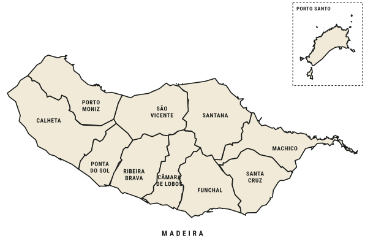
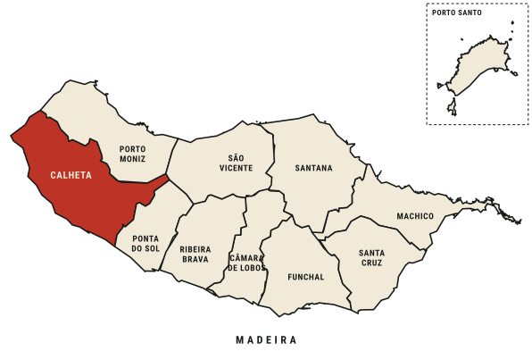
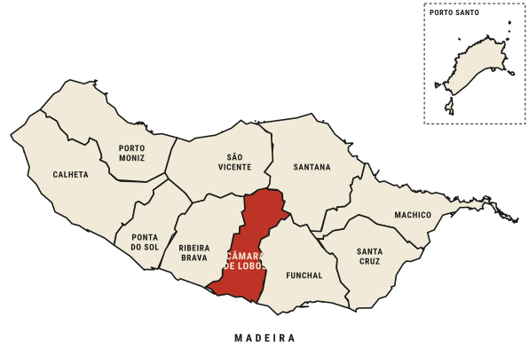
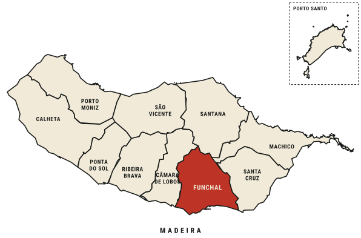
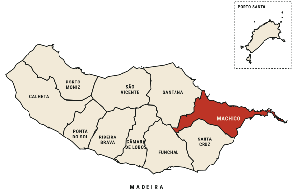
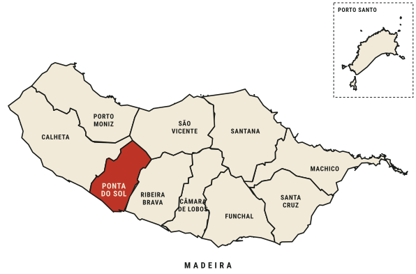
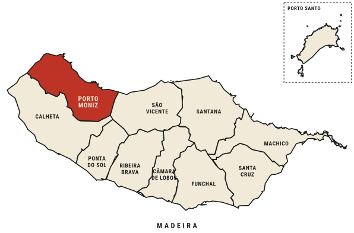
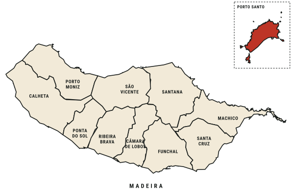
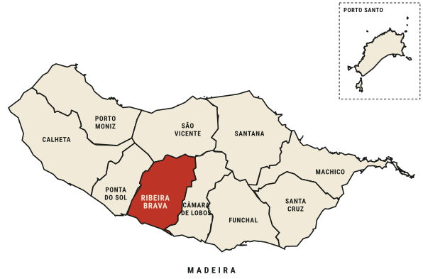
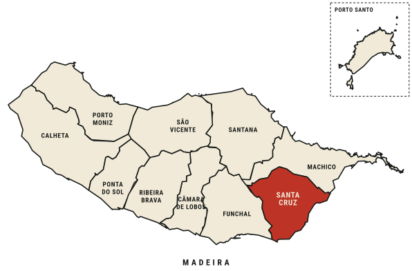
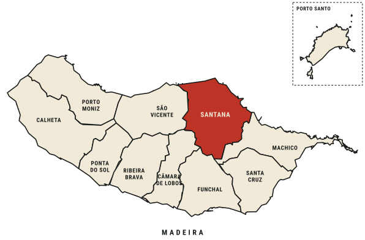
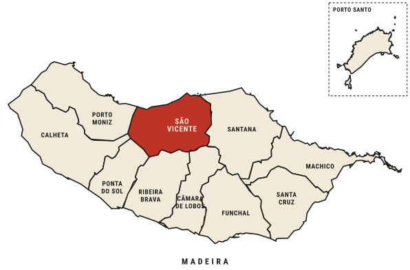